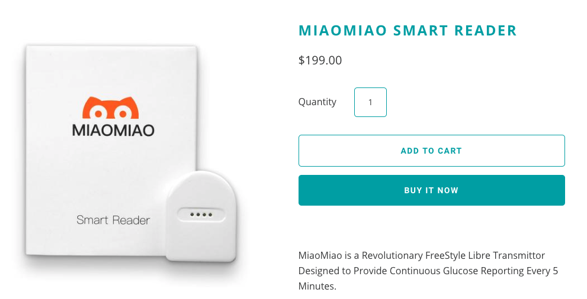

Chapter 4 Data Collection and Upload
Websites and apps that help you track glucose numbers
4.1 Abbott Labs Official
The most important software for Freestyle Libre downloading is the officially-supported one here:
https://provider.myfreestyle.com/freestyle-libre-resources.html
Create an account on Libreview and then you can download your data as a CSV file here:
https://www.libreview.com/meter
>>>>> gd2md-html alert: inline image link here (to images/image1.jpg). Store image on your image server and adjust path/filename/extension if necessary.
(Back to top)(Next alert)
>>>>>

alt_text
Then click here: https://www.libreview.com/glucosereports
>>>>> gd2md-html alert: inline image link here (to images/image2.jpg). Store image on your image server and adjust path/filename/extension if necessary.
(Back to top)(Next alert)
>>>>>

alt_text
If you have the Abbott custom reader device, you can also download a Mac or Windows version of Freestyle Libre personal CGM
>>>>> gd2md-html alert: inline image link here (to images/image3.png). Store image on your image server and adjust path/filename/extension if necessary.
(Back to top)(Next alert)
>>>>>

alt_text
4.2 International versions
[table by Chuck Kub]
China: buy a reader plus 3 14-day sensor packsthrough Taobao for about 1800 RMB (USD$270)
4.3 Third Party
Many organizations now offer ways to upload and use your Freestyle (or other CGM) data.
|
Nightscout
“an open source, DIY project that allows real time access to a CGM data via personal website, smartwatch viewers, or apps and widgets available for smartphones” See their app https://spike-app.com/ |
>>>>> gd2md-html alert: inline image link here (to images/image4.png). Store image on your image server and adjust path/filename/extension if necessary.  http://www.nightscout.info/
http://www.nightscout.info/
|
|
|
Diasend
(formerly called Glooko) tries to let you upload data from anywhere |
>>>>> gd2md-html alert: inline image link here (to images/image5.png). Store image on your image server and adjust path/filename/extension if necessary.  https://diasend.com/us
https://diasend.com/us
|
|
|
Tidepool https://app.tidepool.org/patients
Open-source non-profit place to upload glucose data |
>>>>> gd2md-html alert: inline image link here (to images/image6.png). Store image on your image server and adjust path/filename/extension if necessary.
|
|
| Diabetes:M |
>>>>> gd2md-html alert: inline image link here (to images/image7.png). Store image on your image server and adjust path/filename/extension if necessary.  |
|
| Glimp : popular Android app |
>>>>> gd2md-html alert: inline image link here (to images/image8.png). Store image on your image server and adjust path/filename/extension if necessary.
https://play.google.com/store/apps/details?id=it.ct.glicemia |